다른 차량이 표적의 일부 또는 전체를 가리면서 카메라와 라이다 관측 품질이 달라짐
교육부, 한국연구재단 석사과정생 연구장려금
강화학습 기반 카메라-라이다 센서융합 차량 추적
교차로 도로변의 단안 카메라와 2D 라이다로 차량을 검출하고, DQN이 상황에 적합한 차량 코너점을 선택하도록 설계했습니다. 선택된 관측값은 IMM에 입력해 차량의 중심 위치, 속도와 진행방향을 연속 추정했습니다.
- 연구 범위
- 기획, 알고리즘, 시뮬레이션, 현장 검증
- 핵심 기술
- YOLO, DBSCAN, RANSAC, DQN, IMM
- 검증
- MATLAB 시뮬레이션, 서울 마곡동 교차로
- 성과
- 석사학위논문, ICROS 2025 제1저자 구두발표, 특허 출원 공동발명
01 / QUESTION
연구 문제
카메라와 라이다를 함께 사용해도 차량의 가림, 자세 변화와 센서 노이즈에 따라 각 관측 방법의 정확도가 달라졌습니다. 핵심은 센서를 단순히 하나로 합치는 것이 아니라, 매 시점 어떤 관측을 차량 위치 추정에 사용할지 결정하는 문제였습니다.
직진과 회전, 센서 상대 위치에 따라 라이다가 관측하는 차량 면과 영상 경계가 계속 변화
하나의 코너 계산 방법을 고정 사용하면 잘못된 관측이 이후 추적 오차로 이어질 수 있음
두 센서만으로 실제 교차로에서 차량 상태 추정 성능을 검증
02 / SYSTEM
차량 추적 프레임워크
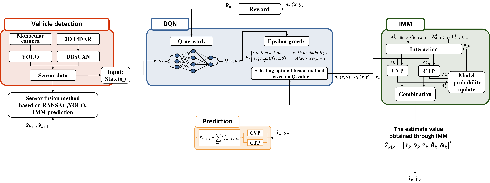
03 / OBSERVATION
상황별 차량 코너점 추정
차량 위치를 프레임마다 일관되게 비교하기 위해 전방 우측 코너를 공통 기준점으로 사용했습니다. 다만 차량의 방향, 가림과 센서 관측 상태에 따라 같은 코너를 가장 잘 표현하는 정보가 달라지므로, 각 관측 조건에 대응하는 5개의 코너 후보를 계산했습니다.
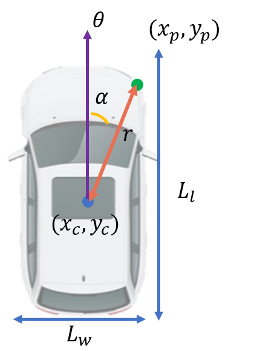
중심점 (x_c, y_c)과 관측 코너 (x_p, y_p)는 서로 다른 점입니다. 아래 다섯 방법은 같은 코너를 얻기 위한 관측 후보입니다.
같은 코너, 상황에 따라 다른 관측
차량의 두 면이 보이면 RANSAC 두 선의 교차점을 사용합니다. 한 면만 보이면 영상 경계와 라이다 선을 함께 활용하고, 회전하거나 관측이 불안정하면 라이다 최근접 점 또는 IMM 예측점을 후보로 둡니다.
차량 전면과 측면을 나타내는 두 개의 유효 선 모델이 확보될 때
YOLO 최대 방위각 경계와 RANSAC 차량 면을 함께 사용할 때
YOLO 최소 방위각 경계와 RANSAC 차량 면을 함께 사용할 때
차량 회전 시에도 사용할 수 있는 물리적 기준점이 필요할 때
가림이나 센서 이상치로 현재 관측이 불안정할 때
빨강 ×: 라이다 점 / 노랑: RANSAC 선 / 보라: YOLO 최대 방위각 / 하늘색: YOLO 최소 방위각 / 청록 점: 코너 후보 / 파랑 점: 센서 위치
04 / SIMULATION
시뮬레이션 결과
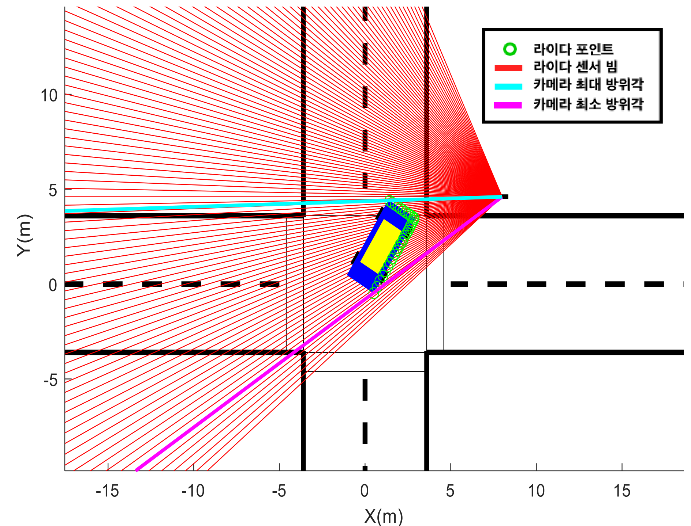
Pure Pursuit로 직진과 좌회전 차량 거동을 구현했습니다. 아래 그래프는 단일차량의 좌회전과 직진 결과를 각각 보여줍니다.
대표 좌회전 결과 — 단일차량


차량 상태 추정 — 단일차량 좌회전

직진 결과 — 단일차량
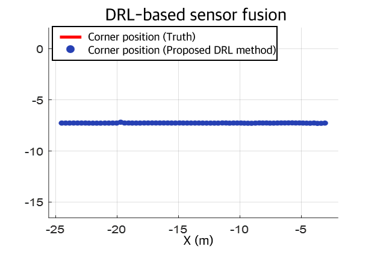
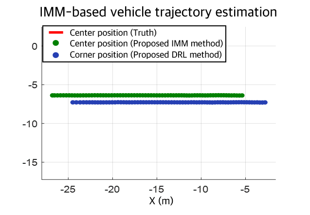
차량 상태 추정 — 단일차량 직진

| 시뮬레이션 시나리오 | 위치 RMSE | 속도 RMSE | 진행방향 RMSE |
|---|---|---|---|
| 단일차량 좌회전 | 0.066 m | 0.491 m/s | 0.038° |
| 단일차량 직진 | 0.012 m | 0.419 m/s | 0.001° |
| 다중차량 좌회전 | 0.054 m | 0.468 m/s | 0.041° |
| 다중차량 직진 | 0.015 m | 0.444 m/s | 0.002° |
위치 RMSE는 차량 중심 위치 기준이며, 단일차량과 다중차량 조건을 구분했습니다.
05 / FIELD TEST
현장 검증
시뮬레이션에서 검증한 알고리즘을 서울 강서구 마곡동의 실제 교차로에 적용했습니다. 도로변에는 단안 카메라와 2D 라이다 센서 플랫폼을 설치하고, 시험차량에는 RTK-GPS를 장착해 차량 중심의 기준 위치를 취득했습니다.

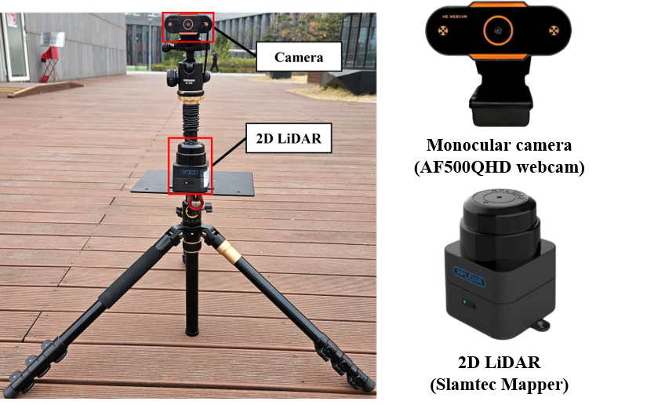
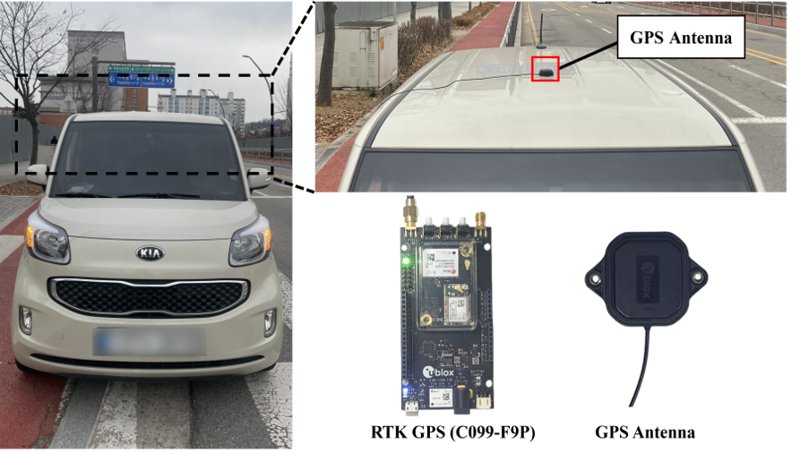
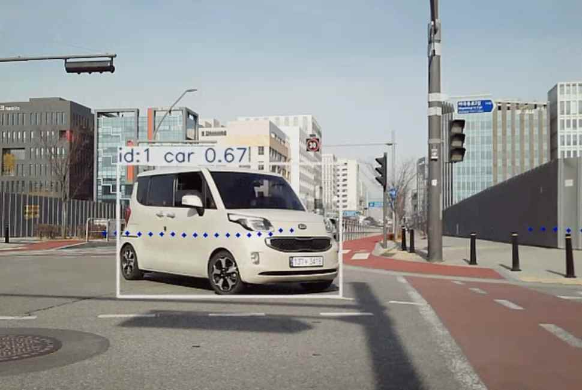
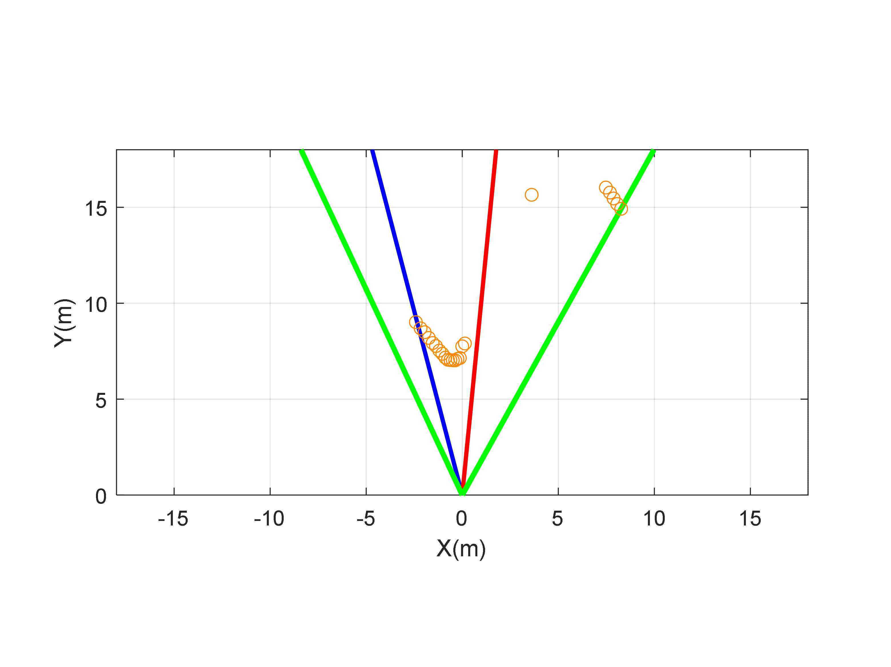
동일 시점 센서 입력 / 카메라에서 검출한 차량 영역과 이에 대응하는 2D 라이다 포인트를 함께 사용해 차량 후보를 구성했습니다.
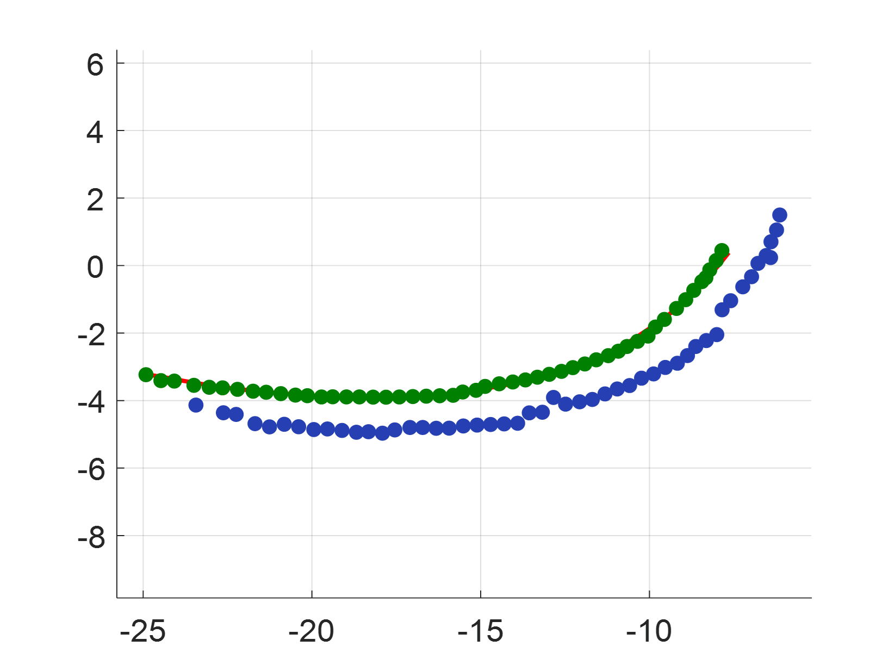
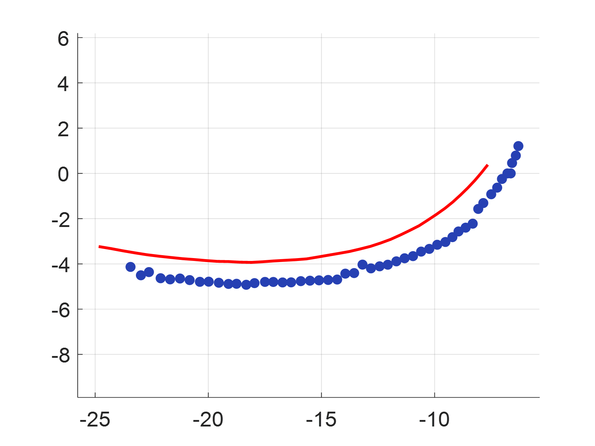
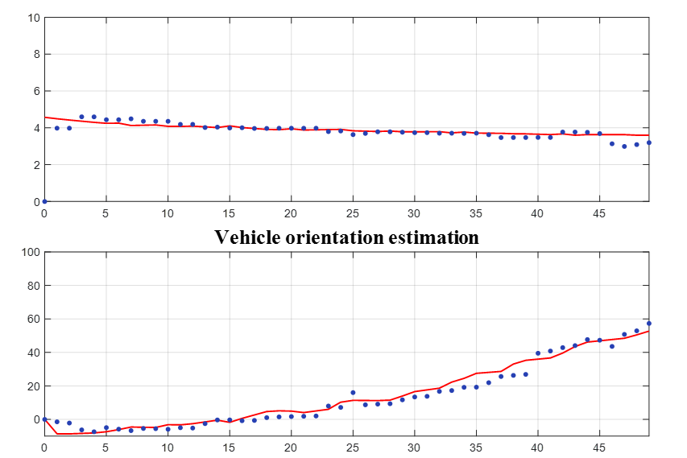
| 현장 시나리오 | 위치 RMSE | 속도 RMSE | 진행방향 RMSE |
|---|---|---|---|
| 좌회전 | 0.092 m | 0.224 m/s | 3.507° |
| 직진 | 0.078 m | 0.401 m/s | 2.554° |
06 / OCCLUSION
가림 대응
다른 차량이 목표 차량 일부를 가리면서 카메라와 라이다 관측 품질이 저하됩니다.
목표 차량의 직접 관측이 사라진 구간에서는 IMM 예측값을 이용해 추적을 이어갑니다.
목표 차량이 다시 관측되면 현재 센서 상태에 맞는 관측 후보를 다시 선택해 실제 궤적으로 추적을 회복합니다.
빨강 ×: 라이다 점 / 보라: YOLO 최대 방위각 / 하늘색: YOLO 최소 방위각 / 파랑 점: 센서 위치
가림 이후 궤적 회복 비교
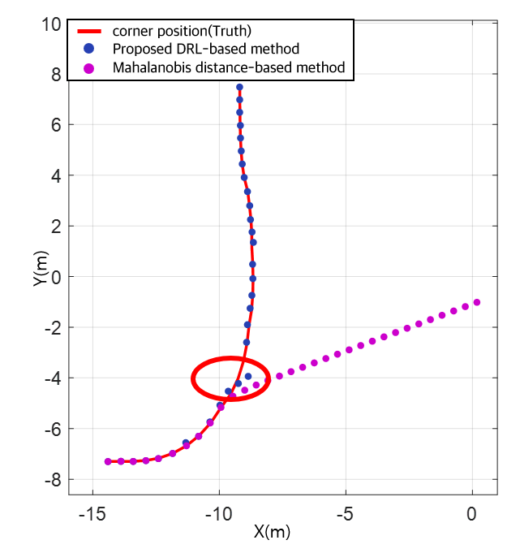
IMM 예측값과 관측 후보의 Mahalanobis 거리를 이용해 기준점을 선택하는 비교 방법입니다. 가림 이후 관측 상태가 크게 변하면 실제 궤적으로 다시 수렴하는 데 한계가 나타났습니다.
가림 중에는 IMM 예측 후보를 활용하고, 재검출 뒤에는 현재 센서 상태에 적합한 관측 후보를 다시 선택해 추적을 회복합니다.
07 / RESULT
비교 결과
20.6%
현장 위치 RMSE 감소
동일 현장 데이터에서 Mahalanobis 거리 기반 비교 방법 0.126 m, 제안 방법 평균 0.100 m
| 검증 환경 | 비교 방법 | 제안 방법 평균 | 감소율 |
|---|---|---|---|
| MATLAB 시뮬레이션 | 0.043 m | 0.030 m | 30.2% |
| 서울 마곡동 현장시험 | 0.126 m | 0.100 m | 20.6% |
각 검증 환경에서 동일한 데이터를 사용해 두 방법을 비교했습니다.
08 / OWNERSHIP
수행 범위
- 기획연구 질문 설정, 선행연구 분석, 연구과제 계획 수립
- 알고리즘차량 코너 후보 계산 방법 정의, DQN 상태, 행동, 보상 설계 및 Python 학습과 추론 구현, IMM 기반 차량 상태 추정
- 환경MATLAB 시뮬레이션 구축, 센서 플랫폼 설치, 실험차량 운전
- 검증RTK-GPS 기준 데이터 수집, 시뮬레이션과 현장 로그 분석
- 성과화석사학위논문 작성, ICROS 2025 제1저자 구두발표, 특허 출원 공동발명
09 / OUTPUT
논문 및 특허
석사학위논문교차로 도로변 센서 시스템을 위한 강화학습 기반의 단안 카메라와 2D 라이다 센서 융합 알고리즘ICROS 연구를 실제 교차로의 단일 및 다중차량 현장 검증까지 확장중앙대학교 대학원, 2025.08 / 98쪽 원문ICROS 2025차량 추적을 위한 강화학습 기반 도로변 센서 시스템DQN-IMM 차량 추적 프레임워크와 시뮬레이션 검증제1저자 구두발표
특허 출원차량 상태 추정 방법, 이를 수행하는 장치 및 기록매체공동발명 / 출원번호 10-2025-0136289